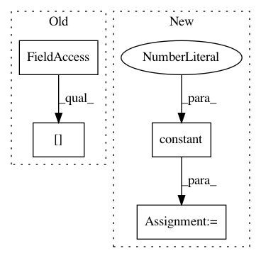

a4c4a4f2d33081806397784f96b113d5b3b32c9a,tensorforce/core/memories/prioritized_replay.py,PrioritizedReplay,tf_retrieve_timesteps,#PrioritizedReplay#Any#,149
Before Change
return tf.no_op()
def tf_retrieve_timesteps(self, n):
num_timesteps = (self.memory_index - self.episode_indices[0] - 2) % self.capacity + 1
n = tf.minimum(x=n, y=num_timesteps)
indices = tf.zeros(shape=(n,), dtype=tf.int32)
After Change
// Vectorized sampling.
sum_priorities = tf.reduce_sum(input_tensor=self.priorities, axis=0)
sample = tf.random_uniform(shape=(num_priority_elements,),dtype=tf.float32)
indices = tf.constant(value=0, shape=(num_priority_elements,))
def cond(loop_index, sample, priorities):
return tf.reduce_all(input_tensor=(sample <= 0))
def sampling_fn(loop_index, sample, priorities):
priority = self.priorities[loop_index]
sample -= priority / priorities
return (tf.add(loop_index, 1), sample, priorities)
priority_indices = tf.while_loop(
cond=cond,
body=sampling_fn,
loop_vars=(indices, sample, sum_priorities)
)[0]
priority_terminal = tf.gather(params=self.terminal_memory, indices=priority_indices)
priority_indices = tf.boolean_mask(tensor=indices, mask=tf.logical_not(x=priority_terminal))
In pattern: SUPERPATTERN
Frequency: 3
Non-data size: 4
Instances
Project Name: reinforceio/tensorforce
Commit Name: a4c4a4f2d33081806397784f96b113d5b3b32c9a
Time: 2018-02-08
Author: mi.schaarschmidt@gmail.com
File Name: tensorforce/core/memories/prioritized_replay.py
Class Name: PrioritizedReplay
Method Name: tf_retrieve_timesteps
Project Name: reinforceio/tensorforce
Commit Name: a3fe8bdf1c484e390dfe3947cc395372c0187589
Time: 2019-02-06
Author: alexkuhnle@t-online.de
File Name: tensorforce/core/distributions/beta.py
Class Name: Beta
Method Name: tf_log_probability
Project Name: tensorflow/transform
Commit Name: 204b4cad88ff526006e2fa2c6604c35902cf5aef
Time: 2018-05-15
Author: tf-transform-dev@google.com
File Name: tensorflow_transform/mappers.py
Class Name:
Method Name: apply_vocab